QUEM SOMOS?
A Iapucã Multiversidade Autônoma Mãe Preta dos Povos da Terra é uma grande teia viva, entrelaçada por comunidades kilombolas, indígenas, ribeirinhas e de terreiro. Sua semente foi lançada em 2017. Essa trama insurgente é protagonizada por mulheres jovens kilombolas, em Salvador, guardiãs da memória, da espiritualidade e do esperançar em aliança com suas mais velhas, para enfrentar as violências estruturais e políticas que atingem os rios, lagoas, periferias, territórios dos povos originários e nossos corpos.
Somos protagonistes das nossas histórias coletivas, desde os nossos corpos e territórios. Somos anciãs e anciãos, adultos, jovens, crianças. Ao nosso lado também caminham alianças e parcerias. Pessoas que compartilham afetos e projetos de transformação do mundo: ativistas da cultura, dos direitos humanos, ambientalistas, membros de movimentos sociais, universidades, educadoras populares.
Não somos iguais, somos múltiplas. De idades, territórios, raças, gêneros, sexualidades, povos, religiões. Somos sonhadoras: sonhamos e criamos, cotidianamente, um outro mundo possível. Um território itinerante que se estende da Figueira Negra, no Sul, à Samaúma, no Norte, passando, antes, pelo Dendezeiro, Nordeste do país. Como dizem as/os irmãs/ãos indígenas zapatistas do México, sonhamos “um mundo onde caibam muitos mundos”. Somos teia: a teia de Ananse, que tece sua teia de prata e traz para seu povo muitas histórias e sabedorias.
Conferir abrigos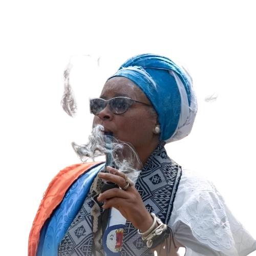
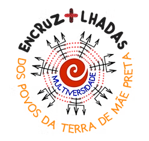
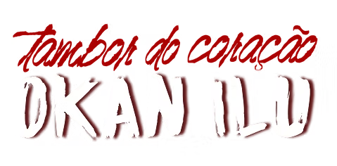
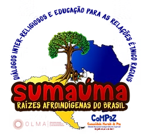
SOBRE NÓS
“Levantar em multidão, como se levanta às florestas”(Território de Mãe Preta)
O projeto Iapucã Multiversidade Autônoma Mãe Preta dos Povos da Terra surgiu em 2017 na Comunidade Kilombola Morada da Paz - Território de Mãe Preta, pelo chamado de uma preta-velha, que guia e protege a comunidade, Iyagba Ancestral Mãe Preta, em contato com uma ancestral indígena, Iapucã, anciã do povo Capucã, que nos convocou: “É preciso reunir o povo e sonhar juntos nessa luta, para que acessem os campos do sol, da chuva, do vento da Multiversidade”.
Multiversidade, como quem se recusa a uma história única, que rompe com o modo colonial de estar no mundo e defende o encontro de saberes múltiplos e diversos dos povos da terra, a serviço de um propósito comum: proteger a vida, sonhar e criar outro mundo possível, aqui e agora
Ao chamado ancestral para tecer uma aliança entre os povos da terra, junta-se outro, através de um sonho de nossa Ìyalasé Yashodhan Abya Yala: o murmúrio das águas da Lagoa de Abaeté, em Itapuã, Salvador-BA, território indígena Tupinambá, e de okupação cotidiana pelos povos de asé, vive sob ameaças permanentes impostas pela proliferação de megaempreedimentos, especulação imobiliária e racismo religioso. Nós, Filhas de Mãe Preta, atendemos a este chamado.
O CHAMADO:
“O murmúrio da água é a voz de minha Mãe” (Território de Mãe Preta)
Somos mulheres jovens kilombolas, majoritariamente negras, que cruzaram léguas até Salvador para dar continuidade à memória e à preservação do seu Território, a Comunidade Kilombola Morada da Paz. Lutamos pelo direito de ser e existir, trabalhando pela recuperação da cultura ancestral afro-brasileira com alinhamentos búdicos e indígenas, e entendendo que somos seres em comunhão com o Todo.
Acolhemos a missão, o chamado, o brado de ser multiversidade e hoje estamos com um espaço físico em Salvador, onde está territorializada a Kasa da Iapucã Multiversidade, é espaço marcado por mobilidades forçadas — desde a diáspora africana até os deslocamentos contemporâneos provocados por violência territorial, racismo estrutural e crise climática. A própria história da Comunidade Kilombola Morada da Paz em Salvador é marcada por racismo religioso e a ameaça constante sobre nossa juventude.
Essa Kasa, nas cercanias da Lagoa, é ponto de convergência estratégica, servindo ao refúgio, acolhimento e encontro para os povos kilombolas, indígenas, ribeirinhos, periféricos em trânsito, em deslocamento forçado ou em retomada de seus territórios e práticas ancestrais. Kasa onde possam estar em segurança, tecer juntes estratégias de defesa e protegimento da vida, onde possam recuperar suas forças vitais com práticas ancestrais e cuidados comunitários, desviando da medicalização da vida, revitalizando seus sonhos e esperançares e celebrando a festa do reencontro dos povos. Trata-se, portanto, de um espaço de acolhimento e reterritorialização de sujeitos deslocados. Uma estrutura urbana de continuidade cultural para comunidades quilombolas e indígenas.
SEMEANDO ESPERANÇAR FURIOSO:
Nosso pensamento não é linear, é circular. Não formamos, nem distribuímos títulos. Ao contrário, q ueremos desformar, tirar nosso pensamento das caixinhas e formatações colonialistas, fazemos isso através de ipádès, rodas de conversa, onde a fala, o canto, a dança e a escuta são ancestrais e fundamentais.
Nossa incidência vai além dos encontros: atuamos na construção de políticas públicas, na litigância estratégica, no enfrentamento, cuidado biomentoespiritual, cultivo de horta comunitária e oficinas de geração de renda.
Também promove espaços de acolhimento para públicos diversos, além de saraus culturais, realiza o Festival N’goma, que celebra a ancestralidade dos tambores latino-americanos, e atua na incidência política pela preservação da Lagoa do Abaeté. Esses processos formativos se territorializam nas Comkolas, fortalecendo redes comunitárias e saberes tradicionais e na denúncia aos mega-projetos que se impõem sem consulta prévia a nossos povos e na articulação de defesas territoriais que envolvem a construção de Protocolos de Consulta Prévia, Livre e Informada, como o Dossiê Kilombo: Proteger, Defender e Vigiar, e o Programa Encruzilhada, que chegou a ser apoiado pela UNICEF, em 2021.
Somos sabedoras/es sentipensantes. Aprendemos, com os nossas/os ancestrais, a aprender e a ensinar. Fazemos isso contando histórias e criando vínculos com os seres com quem compartilhamos o mundo. Contamos nossas histórias para continuar vivendo. Sentipensamos com a mente emocionada e com o coração inteligente.
TTemos um propósito comum. Somos seres integrados. Cultivamos, cada um à sua maneira, o bem viver e sentimos a urgência do chamado da Terra em defesa da vida. Por isso, algumas linhas centrais orientam nossas conversas e ações:
- Educação e nossos modos de ensinar e aprender;
- Terra e direitos territoriais;
- Cura e Ecoespiritualidade;
- Agroecologia e Saúde;
- Ekogestão e autonomia comunitária;
- Identidades de gênero e sexualidades;
- Racismos Ambientais, Institucionais, Religiosos e Sistêmicos.
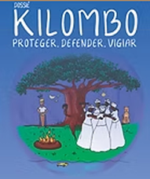
DOSSIÊ KILOMBO
Proteger, Defender e Vigiar
O Dossiê Kilombo – Proteger, Defender e Vigiar, publicado em 2022, contém a cartografia comunitária do Território Kilombola Morada da Paz, realizada ao longo do Programa Encruzilhadas da Multiversidade, Protocolo de Consulta e Estatuto Comunitário Igbesi Alaafia.
CASAS DE ACOLHIMENTO
Além de fortalecer territórios e saberes ancestrais, a Multiversidade também se dedica a cuidar das vidas que necessitam de proteção imediata. Oferecemos lares temporários para pessoas em situação de vulnerabilidade — vítimas de violência, pessoas LGBTQIAP+ expulsas de suas casas, famílias em risco ou qualquer ser humano que precise de um espaço seguro para recomeçar.
Conferir abrigos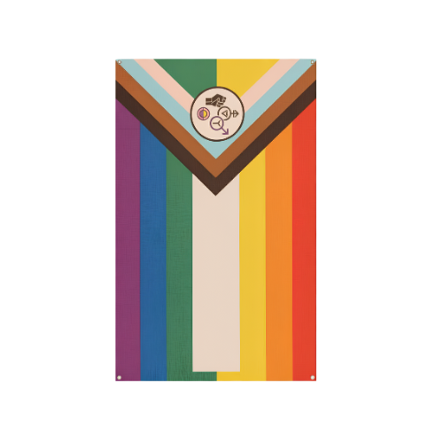
PARCEIROS
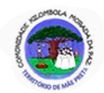
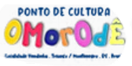
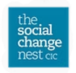
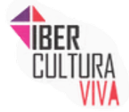
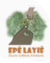
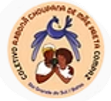
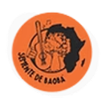
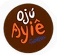
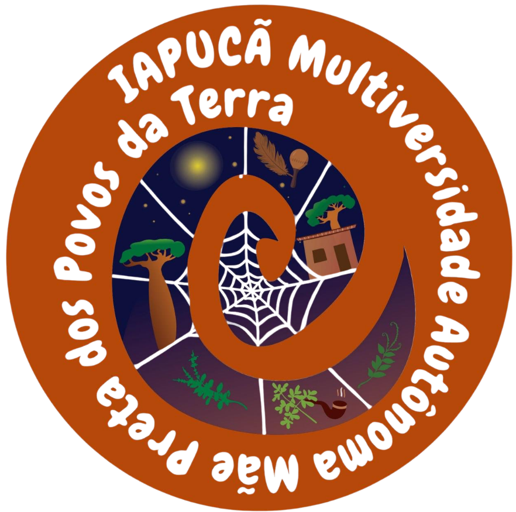
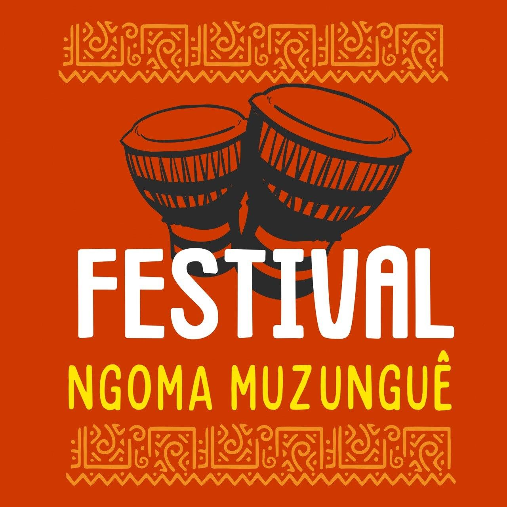